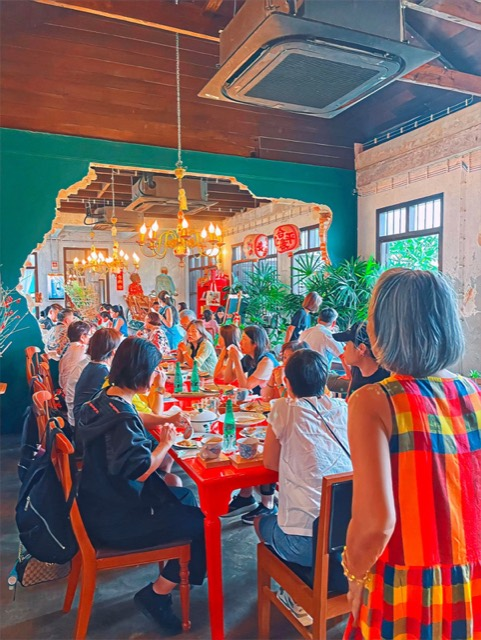
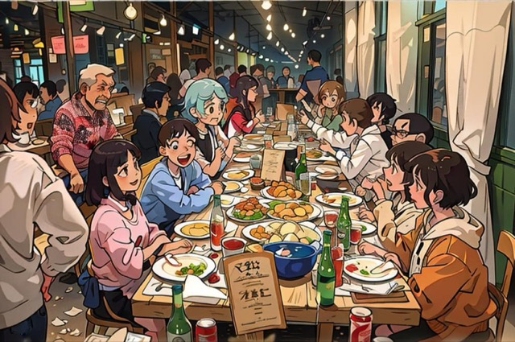
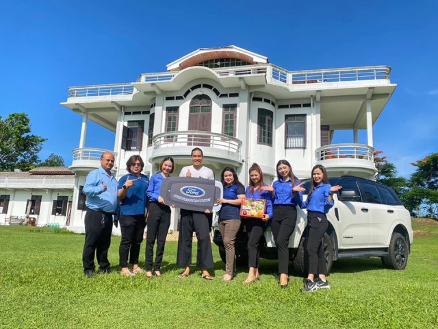
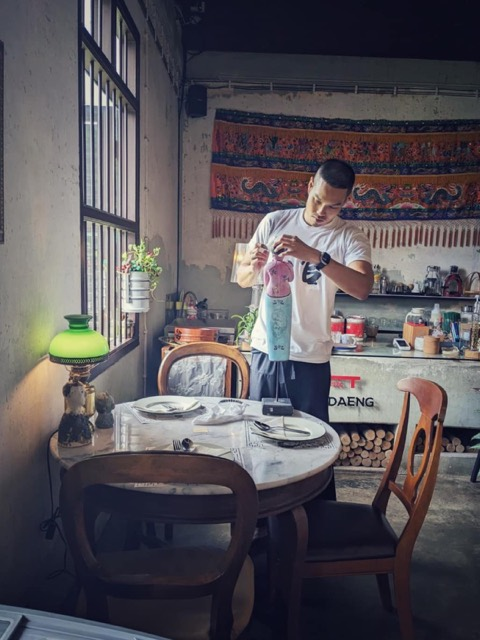
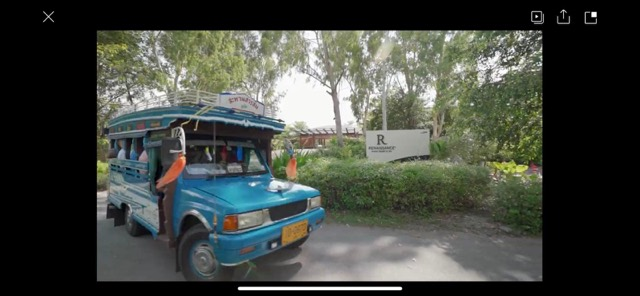
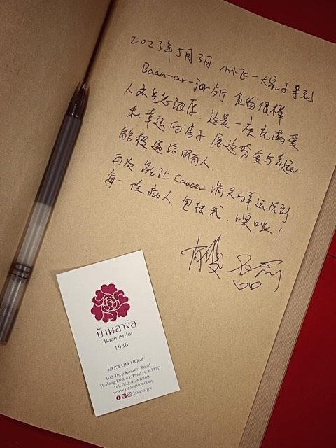
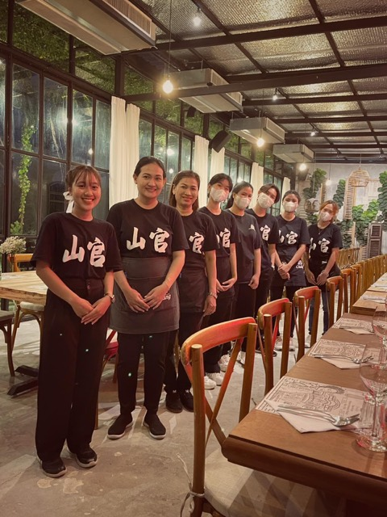
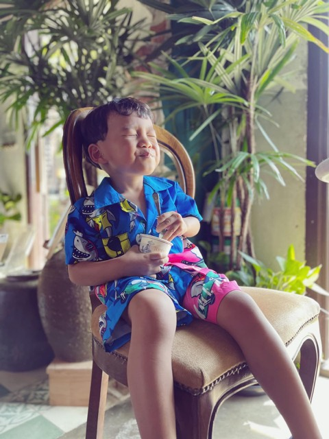
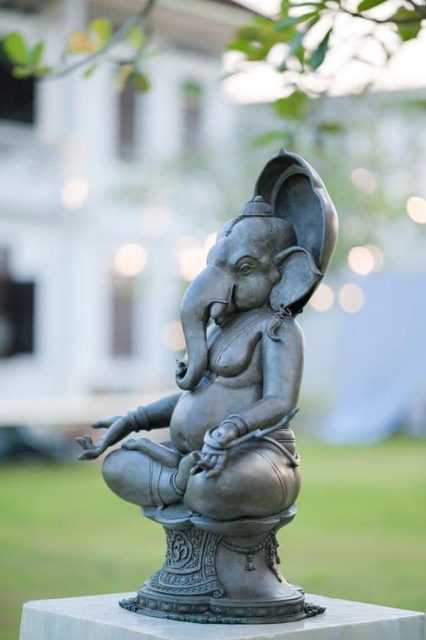
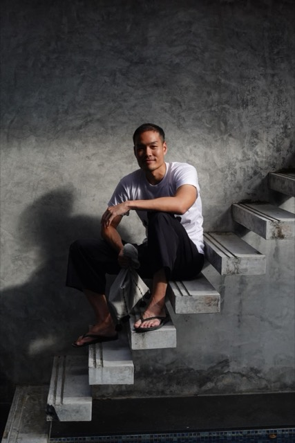

Record for 2023 2566
22 entries
Anuphas Ford hosts an Everest test drive with a tie-dye activityventure
+1 more photos on the entry page
The team serves over a hundred guests while mom manages remotely from Betongventure

Toh Daeng wins Travellers' Choice and ranks in Phuket's Top 5 MICHELIN picksaward
+2 more photos on the entry page
CIMB Bank picks Baan Ar-Jor to host its executive receptionventure

A new Ford from the Anuphas team — the old one carried the whole Baan Ar-Jor projectventure

+1 more photos on the entry page
Baan Ar-Jor's mascot doll breaks and gets repaired againventure

Renaissance Phuket features Baan Ar-Jor in a Mai Khao community travel clipcommunity

+4 more photos on the entry page
Sharing Baan Ar-Jor's story of recovery with Chinese guestsventure

Preparing a 2022 progress report on Baan Ar-Jor and Anuphas Ford for shareholdersrole
+5 more photos on the entry page
The team handles a foreign group of 80 with seven different dietspress

+4 more photos on the entry page
Baan Ar-Jor launches 'The Spirit of Sharing' ice cream for its foundationcommunity

Baan Ar-Jor's story spreads widely in the newspress

A family poem reflecting on 2022, a year of loss and resolvecommunity
